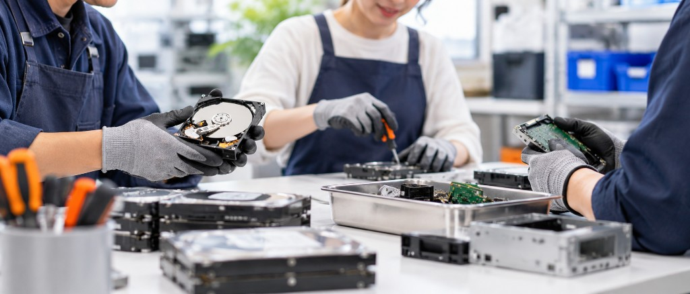
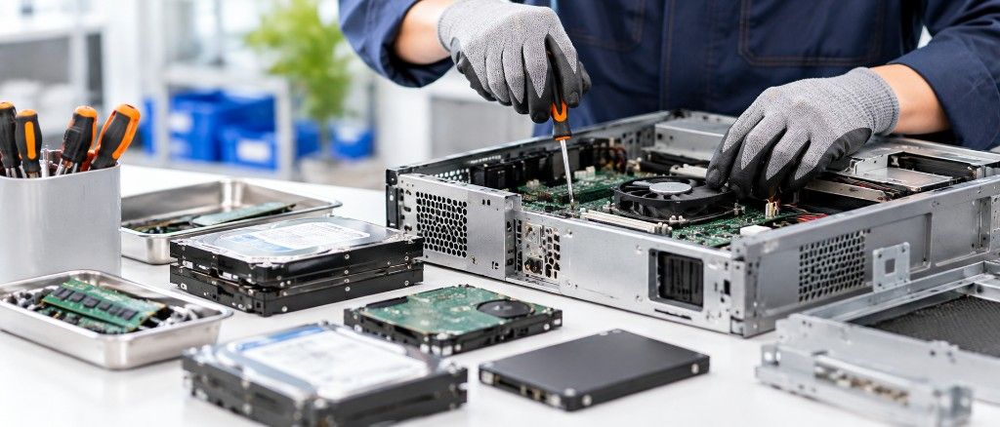
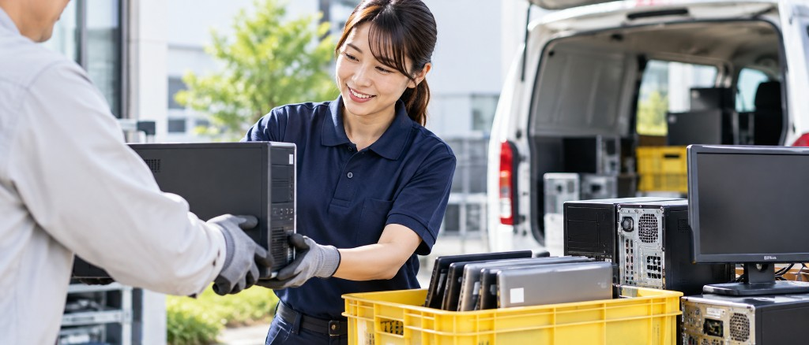
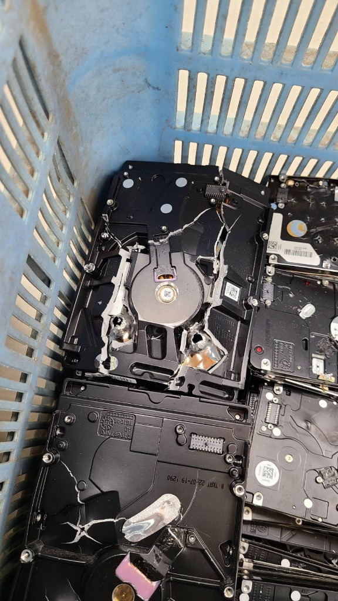
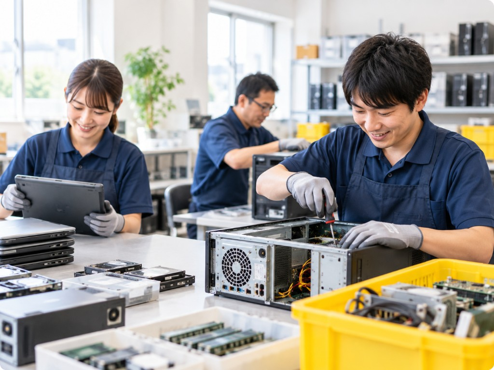

愛媛県東温市｜不要パソコンの回収・解体
不要なパソコンを、
安心して回収・解体
モニター・家庭用プリンター・小型家電も対応
持ち込み歓迎・回収相談OK
-
地域の仕事が
みんなの未来につながる -
リユース・リサイクルで
環境にやさしく -
一人ひとりの
「働きたい」を応援
ABOUT OUR WORK
エンジョイワークスの取り組み
不要パソコンの回収・解体を入口に、地域の仕事と働く場をつないでいます。


PC RECYCLE
パソコン回収について
東温市を拠点に、不要になったパソコンや周辺機器の持ち込み・回収相談を受け付けています。松山市など中予圏域からのご相談も可能です。
回収対象
基板や配線が付いている機器を中心に、次のようなものを対象としています。
- デスクトップパソコン
- ノートパソコン
- モニター
- 家庭用プリンター
- PC部品
- 基板
- 配線・ケーブル類
- 小型家電
- その他、基板や配線が付いている機器
回収できないもの
次に該当するものはお受けできません。判断が難しい場合は、無理に持ち込まず事前にご相談ください。
- 大型家電
- 家電リサイクル法の対象など、リサイクル料金が必要なもの
- その他、処理が難しいもの
対象かどうか分からない場合は、機種名や写真の有無など分かる範囲をお知らせいただければ、こちらで確認します。

データの物理破壊
パソコン内のHDDなど記憶媒体は、穴あけによる物理破壊を行います。ソフトウェア消去だけに頼らず、媒体そのものを使えなくすることで、個人情報やデータの流出を防ぎます。持ち込み前に、必要なデータのバックアップをお願いします。
HOW TO USE
回収方法・ご利用案内
すべての機器を無条件で引き取りに伺うものではありません。数量・内容・場所を伺ったうえで、対応できる方法をご案内します。
-
01
持ち込み
東温市の事業所へお持ち込みいただけます。事前にお電話またはメールでご連絡ください。
-
02
少量の回収
少量の場合は、中予圏域での回収をご相談いただけます。日程・経路によりお受けできないこともあります。
-
03
数量が多い場合
事業所や店舗など数量が多い場合は、内容を確認したうえで可否・方法を相談します。
ご利用の流れ
- 1電話またはメールで内容を連絡
- 2対象かどうか・受け渡し方法を確認
- 3持ち込み、または回収日時の調整
- 4解体・分別／記憶媒体の物理破壊
WHO WE ARE
エンジョイワークスについて
NPO法人エンジョイワークスは、愛媛県東温市の就労支援B型事業所です。不要になったパソコン等の解体・分別作業を行っています。
作業を通して、一人ひとりのペースに合わせた仕事の場を提供しています。回収にご協力いただくことが、地域の就労支援にもつながります。
- 事業所就労支援B型事業所
- 所在地愛媛県東温市下林甲1341-1
- 主な作業パソコン等の回収・解体・分別

NPO法人 エンジョイワークス
就労支援B型事業所
〒791-0222
愛媛県東温市下林甲1341-1
TEL：089-990-7105
FAX：089-990-7106
MAIL：enjoyworks@adagio.ocn.ne.jp